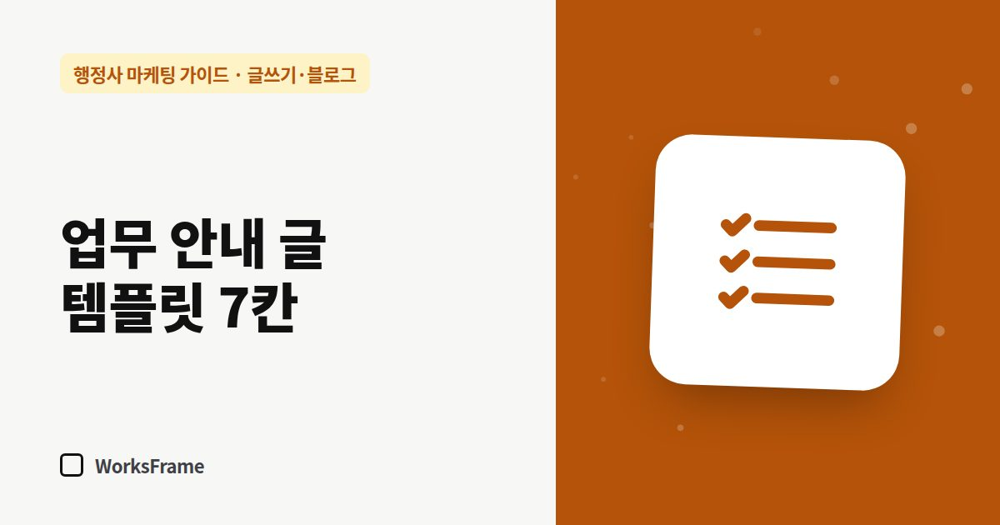

글쓰기·블로그
행정사 업무 안내 글 템플릿 — 그대로 채우면 되는 7칸
한 줄 답
대상 → 요건 → 준비서류 → 절차 → 기간 → 비용 → 자주 묻는 질문. 이 7칸만 채우면 업무 안내 글이 완성됩니다.

업무 안내 글은 형식이 정해져 있을수록 빨리 쓰고, 읽는 사람도 편합니다. 아래 7칸을 복사해 채우세요.
템플릿
``` 제목: [고객의 질문 한 문장] 기준: 2026년 ○월 기준 (관계 기관 안내 확인)
-
이런 분께 필요합니다 - 상황 ① - 상황 ②
-
요건 (핵심만) - 요건 ① - 예외·변수: 상담에서 확인
-
준비서류 - [ ] 서류 ① - [ ] 서류 ② - 상황에 따라 추가될 수 있는 서류
-
절차 1) 상담·서류 검토 2) 서류 준비·작성 3) 신청·제출 4) 보완 대응 5) 결과 안내
-
기간 - 보통 ○~○주, 달라지는 이유
-
비용 안내 - 수임료 안내 방식, 별도 비용(인지대·수수료 등)
-
자주 묻는 질문 - Q/A 3개
[상담 연결] 전화 · 카톡 · 문의 ```
칸마다 쓰는 요령
- 제목 — 사무소 용어 대신 고객이 쓰는 말. “체류자격 변경 업무” 대신 “유학생 졸업 후 취업비자로 바꾸려면?”
- 요건 — 법령 문장을 그대로 옮기기보다 “이런 경우 해당합니다”로 풀어 쓰기
- 준비서류 — 체크박스 형태로. 저장·출력하기 좋습니다
- 절차 — 사무소가 해 주는 부분과 고객이 할 부분을 구분
- 기간 — 확정할 수 없으면 범위와 변수를 함께
- 자주 묻는 질문 — 실제 상담에서 나온 질문 그대로
정확성 체크 세 줄
- 관계 기관 안내·법령과 대조했는가 (날짜 기록)
- 단정·보장 표현이 없는가
- 개인 상황에 따라 달라지는 부분을 밝혔는가
AI로 초안을 쓸 때도 이 템플릿을 그대로 주면 결과가 좋아집니다. (ChatGPT로 초안 쓰기)
자주 묻는 질문
7칸을 다 채울 수 없는 업무는요?
비어 있는 칸은 빼도 됩니다. 다만 “비용 안내”와 “상담 연결”은 어떤 글에도 넣는 것을 권합니다.
법령 조문을 인용해도 되나요?
됩니다. 조문 번호와 기준 날짜를 함께 적고, 쉬운 말로 풀어 설명을 붙이세요.